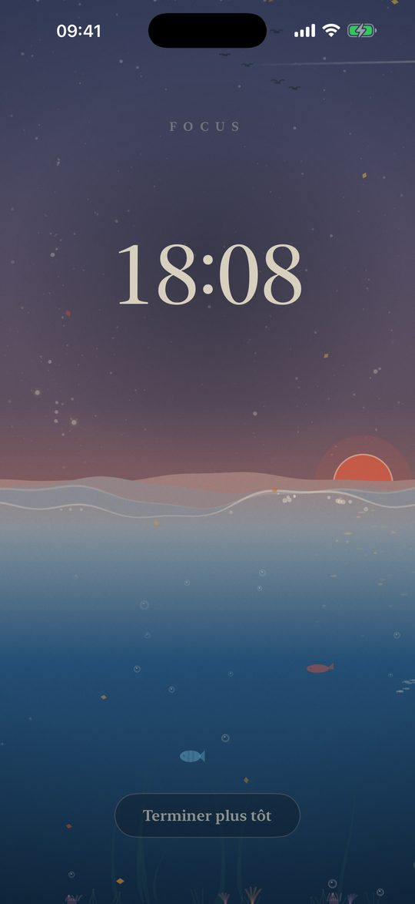
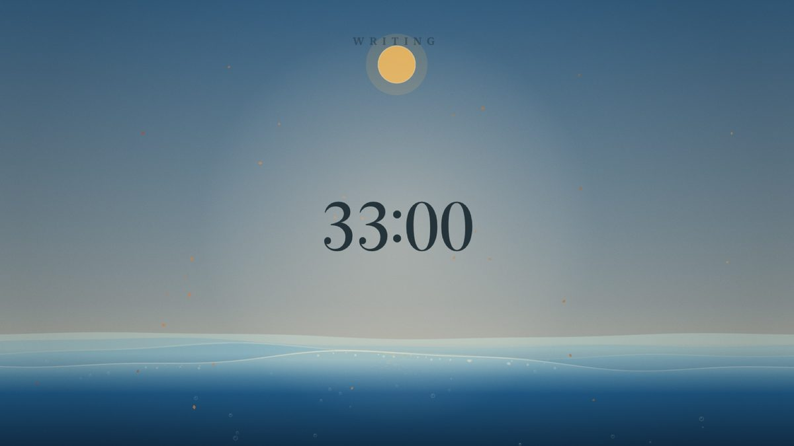
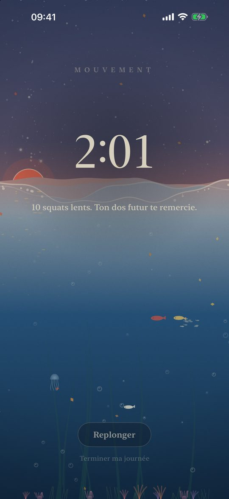
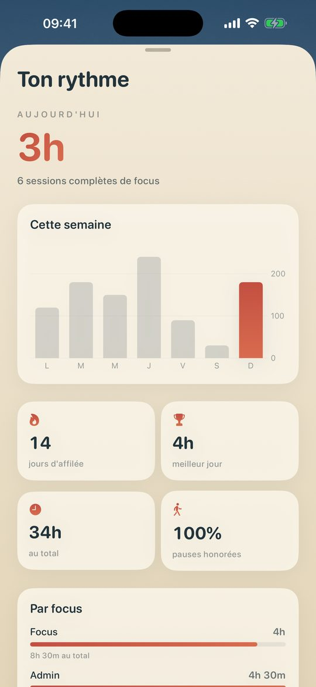

Cadence
Minuteur de focus et blocage d'apps pour iPhone, iPad et Mac.
Trente minutes de travail profond, puis trois debout. La mer monte pendant le focus et redescend pendant que tu bouges, sous un ciel d'estampe vivant qui suit ta vraie journée et la météo locale.
Télécharger dans l'App StoreTéléchargement gratuit. Le blocage est gratuit pendant trois focus, puis un seul achat le débloque pour toujours sur tous tes appareils. Sans abonnement.

Ce que fait Cadence
Un minuteur de focus qui fait bouger
Trente minutes de focus et trois minutes de pause debout par défaut, réglable de 10 à 50 minutes. La pause vaut un dixième du temps travaillé, et elle démarre seule pour que tu te lèves vraiment.
Bloque les apps et les sites qui distraient
Choisis les apps à bloquer pendant le focus avec le sélecteur Temps d'écran d'Apple. Les sites des réseaux sociaux installés sur ton iPhone sont bloqués aussi, dans Safari et dans les autres navigateurs.
Un couvre-feu pour tes nuits
Choisis deux heures, par exemple 23 h et 7 h : les apps choisies se verrouillent chaque nuit, même Cadence fermée. Sur Mac, un compte à rebours prévient dix minutes avant.
Mode travail profond
Une fois activé, un focus ne peut plus être arrêté avant la fin. C'est la cloche qui décide.
iPhone, iPad et Mac, synchronisés
Une vraie app Mac avec son minuteur dans la barre des menus, qui masque les apps choisies. Sessions, réglages et couvre-feu te suivent par iCloud.
Siri, widgets, Live Activity
Lance ou termine un focus avec Siri ou le Centre de contrôle, et suis la marée dans la Dynamic Island.
Mac

Pourquoi se lever toutes les demi-heures
Être assis n'est pas tout le problème ; rester assis sans interruption, si. Les études sur le temps sédentaire ininterrompu (Diaz et al., 2017 ; Duran et al., 2023) et les recommandations 2020 de l'OMS vont dans le même sens : le couper souvent. Cadence est construit autour de ce rythme.


Confidentiel par conception
Pas de compte, pas de publicité, pas de pistage. Cadence ne collecte aucune donnée : ton historique reste sur tes appareils et dans ton propre iCloud.
Questions
Comment bloquer des apps la nuit sur iPhone ?
Active le couvre-feu dans Cadence, règle ses heures et choisis les apps à bloquer. Chaque nuit, à l'heure dite, iOS verrouille ces apps jusqu'au matin, même si Cadence n'est pas ouverte.
Cadence est-il un minuteur Pomodoro ?
Il en reprend le principe, avec un parti pris santé : trente minutes de focus, puis une courte pause debout. La durée du focus est réglable.
Les sites sont-ils bloqués dans Chrome, pas seulement Safari ?
Oui. Pendant un focus, les sites des réseaux sociaux installés sur ton iPhone sont bloqués dans tous les navigateurs iOS, Chrome compris.
Y a-t-il un abonnement ?
Non. Cadence est gratuit au téléchargement. Le blocage est gratuit pendant trois focus ; ensuite Cadence Premium est un achat unique qui vaut pour l'iPhone, l'iPad et le Mac.
Cadence marche-t-il sur Mac ?
Oui, en app Mac native sur le Mac App Store. Elle masque les apps choisies pendant un focus et peut couvrir tout l'écran pendant le couvre-feu.